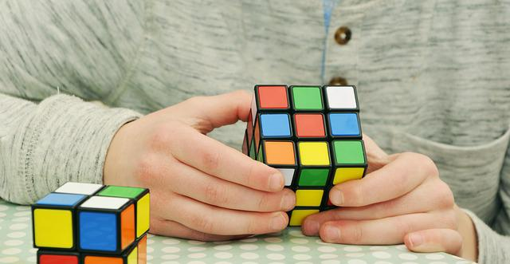

У всех людей есть хобби и я тоже их имею, и как раз сейчас я буду о них расказывать
Собирать Кубики Рубика
Да, согласен, это не очень легко ,но интересно! если кто ещё не знает что такое Кубик Рубика - это головоломка в виде куба 3 на 3 на 3 с разными цветами граней, суть в том чтобы собрать все цвета на всех гранях.
Кстати, забыл сказать что на основе этой головоломки сдеаны другие головоломки такие как: Кубик 2 на 2, 4 на 4, 5 на 5, 6 на 6, 7 на 7 Пирамидка, Мегаминкс, Скьюб, Скваер, Мирор, Мельница, Призрак, Мастер Пираморфикс и т. д.